Script 00001A4E
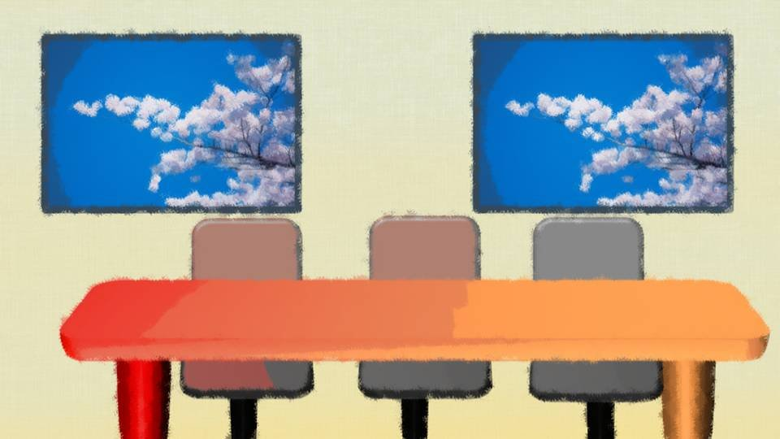
――さて、お待ちかねのこのコーナーです。
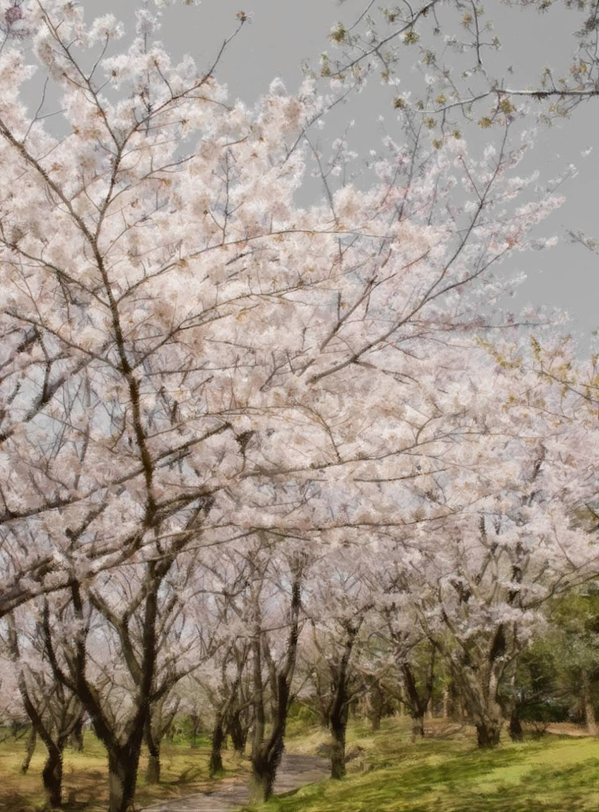
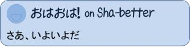
「全国の皆さん！ おはようございます！
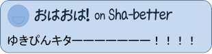
新橋ゆき乃、今日はこちらにお邪魔しております！」
――ゆきちゃん、ずいぶんと桜がたくさんある公園ですねえ。
「そうなんです！ 実はこちら、佐波県元木町にある中央公園よりお送りしております。 今日は全国的にも桜で有名な、佐波県元木町よりおとどけしまーす！」
――おお、ギャラリーの盛り上がりもすごいですねえ！
――ゆきちゃん、ずいぶんと桜がたくさんある公園ですねえ。
「そうなんです！ 実はこちら、佐波県元木町にある中央公園よりお送りしております。 今日は全国的にも桜で有名な、佐波県元木町よりおとどけしまーす！」
――おお、ギャラリーの盛り上がりもすごいですねえ！
「はい！ この中央公園では毎年約1ヶ月間、元木桜祭りが開催されていまして、今年で第70回目を迎えるそうなんです！」
――ということは、祀耀730年から続いているお祭りなんですか！？ ずいぶんと長い歴史のあるお祭りなんですねえ。
「それなんですが、実は初めて開催されたお祭りの時点で、既に第15回目だったそうなんです」
――ん？ どういうことですか？
「こちらをご覧ください！」
――ということは、祀耀730年から続いているお祭りなんですか！？ ずいぶんと長い歴史のあるお祭りなんですねえ。
「それなんですが、実は初めて開催されたお祭りの時点で、既に第15回目だったそうなんです」
――ん？ どういうことですか？
「こちらをご覧ください！」
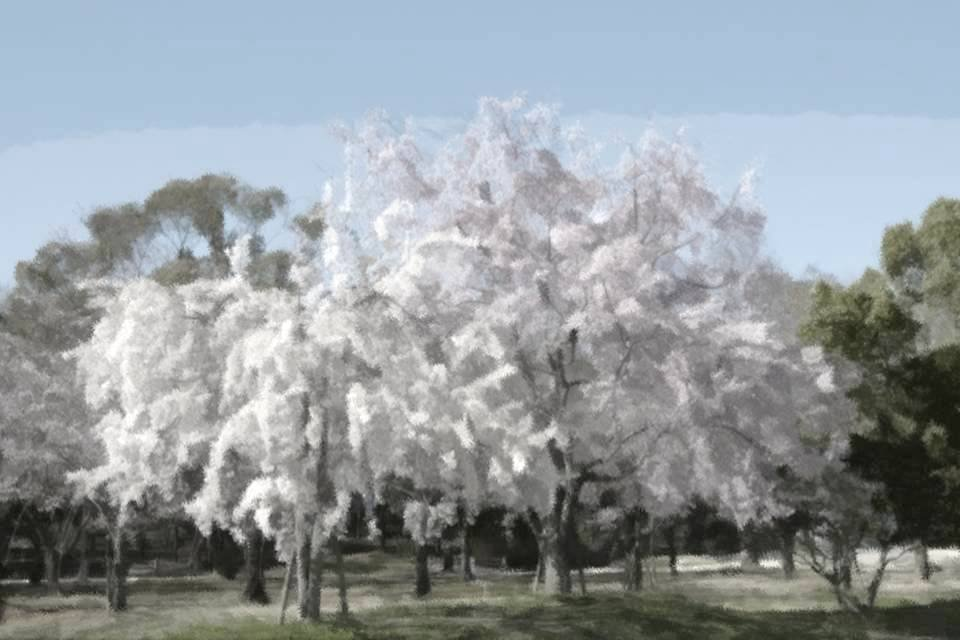
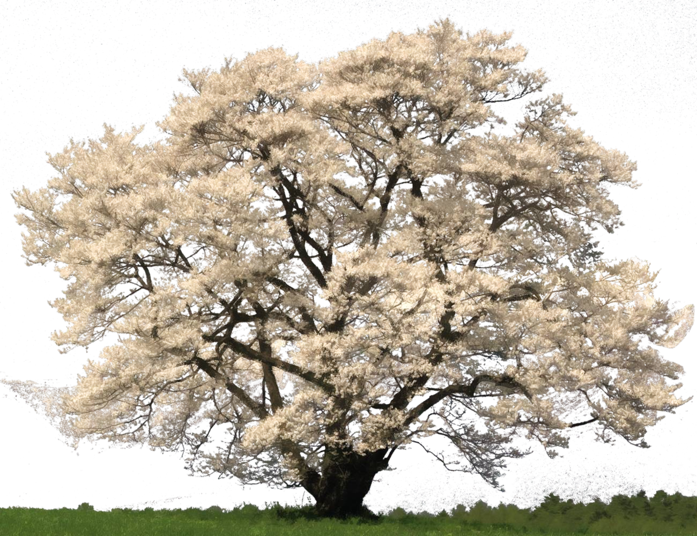
――おお、これは立派な桜の木ですねえ！
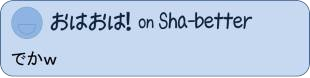
「はい、こちらが元木町のシンボルとも言える御神木と言われる大きな桜の木です」
――もう樹齢1000年とかいってそうですねえ。
「実はこの木、まだ生えてから70年も経っていないそうなんですよ」
――え！？ そんなに若いんですか！？
「そうなんです。
もともと桜祭りはこの御神木を祭るために始まったのですが、『この桜の木はもっと昔からあったのではないか？』という当時住人たちの疑問がありました。
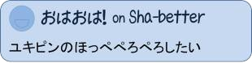
そこで、もっと昔から催されていたお祭りとするために、敢えて初回から第15回としていたそうなんです」
――それでも、50年以上続いているってことは、やっぱり元木町民に桜の木が親しまれているってことですね。
「はい、元木町住民の間では、有給休暇ならぬ、花見休暇という制度を設けている会社もあるそうです。 ですから、この時期には平日であっても、まるで週末のようなにぎわいをみせます」
――なるほどー！ 何か、面白いイベントでもあるんでしょうかね。
「はい、元木町住民の間では、有給休暇ならぬ、花見休暇という制度を設けている会社もあるそうです。 ですから、この時期には平日であっても、まるで週末のようなにぎわいをみせます」
――なるほどー！ 何か、面白いイベントでもあるんでしょうかね。
「実は、今日は元木桜祭りの目玉イベントである、春の大食い大会が開催されます！
しかもあの、超大物スペシャルゲストが参戦するとの情報が入っています！」
――スペシャルゲストが参戦ということは…… 大食いのできる人ってことですね？
――スペシャルゲストが参戦ということは…… 大食いのできる人ってことですね？
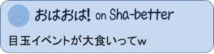
「はい！ この前の全国大会で優勝した……
気になる方は、ぜひ元木町に遊びに来て下さい！」
――元木町、今から行くのは遠いなあ！ どんなメニューで勝負するんですか？
――元木町、今から行くのは遠いなあ！ どんなメニューで勝負するんですか？
「それは……
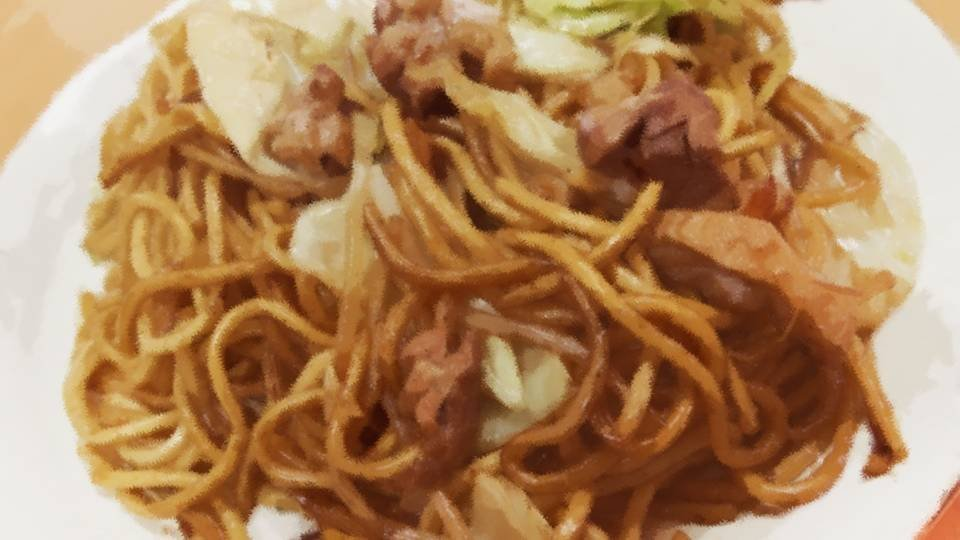
こちら！ 屋台の定番、ソース焼きそばです！
このソース焼きそばを15分間で1番たくさん食べた選手が優勝です！」
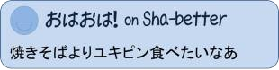
――おお、おいしそうですねえ！ 僕はソース焼きそばとイカ焼きは外せないなあ！
「もちろん、イカ焼きの屋台もありますよ！
では、この焼きそばをさっそく、試食してみたいと思います！」
――ああ、これはオーソドックススタイルでビールが欲しくなるやつですねえ。 僕的にはマヨネーズが欲しいなあ。
――ああ、これはオーソドックススタイルでビールが欲しくなるやつですねえ。 僕的にはマヨネーズが欲しいなあ。
「んん！ おいしい！
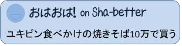
やっぱりね、この屋台ならではのちょっと焦げた感じと、出来立てアツアツでガツンと来るソースの香りが最高です！
実は、おととしからこの大会で優勝しているのは小さな女の子だそうです！」
――小さな女の子？
「はい、去年はたこ焼きを15分で150個も平らげたそうですよ！」
――150個！？ 僕なら1週間かかっても無理だなあ……。
――小さな女の子？
「はい、去年はたこ焼きを15分で150個も平らげたそうですよ！」
――150個！？ 僕なら1週間かかっても無理だなあ……。
「今年も彼女は出場するそうなんですが、果たしてスペシャルゲストとの一騎打ちとなるのか、それとも第3の勢力が襲来するのか！ とても楽しみな戦いです！
ご近所の方、佐波県民の方、今日はぜひとも、元木町の中央公園にお越しください！
現場からは、以上でーす！」
――ありがとう、ゆきちゃーん！
――ありがとう、ゆきちゃーん！
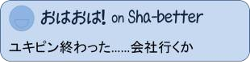
――さて、7:00になりました。火曜のこの時間は『この道、我、達人！』です。
今日は、折り紙手裏剣投げの達人、小学6年生の――。